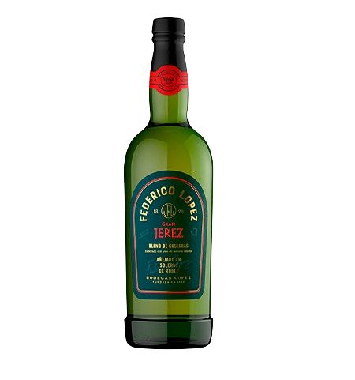

Experiência Bodega Lopez
Na experiência Atamisque, através desta degustação, viajaremos às terras de uma vinícola com anos de trajetória, que se manteve ao longo do tempo.
Como será esta degustação?
Esta degustação contará com 5 vinhos desta vinícola, que serão:


FEDERICO LÓPEZ GRAN RESERVA
Blend Cabernet Sauvignon-Merlot de antigos vinhedos plantados em 1940. Elaborado em homenagem ao criador de nossos vinhos finos, Don Federico López, filho do fundador da vinícola. Com todo carinho de seus filhos, netos e bisnetos.

FEDERICO LÓPEZ JEREZ
Aperitivo envelhecido, suave e leve, de aroma e sabor exquisitos. Resultado de uma tradição centenária: elaborado com cepas originárias de Jerez de la Frontera e envelhecido em soleras de carvalho.
LÓPEZ MALBEC
Vinho emblemático argentino que, desde sua criação em 1973, mantém intacta a qualidade, tornando-se um clássico indiscutível. Este Malbec, harmônico e bem equilibrado, é envelhecido em grandes barricas de carvalho francês.

LÓPEZ DOCE NATURAL
Elaborado com uvas provenientes de vinhedo próprio e único em Tupungato, localizado a 1.300 msnm.
RINCÓN FAMOSO ROSÉ
Exquisito, fresco, equilibrado e delicado. Elaborado com uvas Torrontés Riojano, Moscatel e Viognier. Menos álcool, mais doce natural. Desfrute bem gelado e a qualquer momento. Ideal para compartilhar com pratos doces e como aperitivo.
Localização do evento
A degustação será no local de Antonia Vinos que se encontra na Avenida Valparaíso número 4250, local número 3.